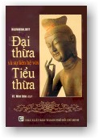

|
BuddhaSasana Home Page |
Vietnamese, with Unicode Times font |
|  |
ÐẠI THỪA VÀ SỰ LIÊN HỆ VỚI TIỂU THỪAHòa thượng THÍCH MINH CHÂU dịch, 1971 (tái bản 1999) Nguyên tác:
Nalinaksha Dutt, |
-ooOoo- T ôi dịch tập "Aspects of Mahàyana Buddhism and its relation to Hìnayàna Buddhism" với mục đích rất khiêm tốn là giúp tài liệu học tập cho sinh viên Phật khoa Vạn Hạnh. Vừa dạy, vừa dịch, kéo dài trong một thời gian hơn một năm. Vừa dịch vừa in, nhiều khi bị chức vụ đa đoan của Viện Trưởng làm gián đoạn, đến khi gần xong, xem lại, tôi muốn bản dịch và bản in đó phải dịch lại và in lại cho hoàn hảo hơn. Nhưng vì Viện nghèo, tiếc tiền tiếc công nên tôi phải cho in cho xong và cho xuất bản với một vài lời cáo lỗi.Tôi cáo lỗi vì dịch không được trọn vẹn. Phần bị chú rất quan hệ trong tập sách này, tôi chỉ dịch một phần nhỏ, vì sinh viên Phật khoa chưa cần đến, và nếu có dịch cũng in không được vì quá nhiều chữ Sanskrit và Pàli. Các vị nào có cần khảo cứu đầy đủ, xin mời đến thư viện Vạn Hạnh xem. Tôi bỏ chương chót về giới luật Ðại thừa, không dịch, vì nghĩ ở Việt Nam giới luật Ðại thừa khá phổ thông và cũng dễ tìm hiểu. Lời cáo lỗi thứ hai là không cho in bị chú dưới mỗi trang sách mà cho in sau mỗi chương, và in không dùng chữ xiên lại in một thứ chữ với các trang chính. Do vậy các độc giả khó phân biệt phần nào là bị chú, phần nào là trang chính. Lỗi lớn vì tại nhà in thiếu chữ, nhất là chữ Sanskrit và Pàli. Mong các độc giả chịu khó phân biệt. Lời cáo lỗi thứ ba là cáo lỗi với tác giả mà tôi quen biết rất nhiều khi ở Ấn Ðộ, vì bản dịch này không phản ảnh trung thực giá trị của tác phẩm. Tác giả không những uyên thâm về Sanskrit và Pàli, lại được hướng dẫn bởi những nhà học giả trứ danh Pháp, nên trình bày tập sách rất khoa học và khúc chiết, và tài liệu vừa dồi dào vừa chính xác, thật là một công trình khảo cứu hy hữu. Giá trị của tập sách này là diễn đạt được tiến trình lịch sử tư tưởng Phật giáo qua ba giai đoạn: Phật giáo nguyên thủy, Phật giáo các bộ phái, và Phật giáo Ðại thừa. Tiến trình này của tư tưởng Phật giáo là một tiến trình liên tục, không có gián đoạn, tuần tự nhi tiến chứ không có đột ngột. Tác giả đã thật sự thành công khi trình bày tiến trình các qua điểm về các vấn đề Ba thân, Niết bàn, Tứ đế, các vị trí tu chứng, ngang qua các phái Thượng tọa bộ, Nhất thế hữu bộ, Ðại thừa giáo khi mới hưng khởi, các nhà Duy thức và các vị Hậu Ðại thừa. Ðoạn truy nguyên các tác phẩm Bát nhã Ba-la-mật, truy nguyên nguồn gốc và địa điểm phát khởi Ðại thừa giáo đáng được chúng ta đặc biệt chú ý, vì tài liệu thật chính xác và khá phong phú. Tác giả đã nối liền lại hai giòng tư tưởng Tiểu thừa và Ðại thừa, và giúp chúng ta tìm được sự liên tục giữa hai giòng tư tưởng nhiều khi mâu thuẫn và chống đối. Ðọc kỹ tiến trình tư tưởng Phật giáo, chúng ta sẽ thấy các luận sư không vị nào là không muốn diễn đạt cho thật sự trung thành giáo nghĩa nguyên thủy của đức Từ Phụ. Dầu cho sự diễn đạt đặt dưới nhiều quan điểm và khía cạnh sai khác, lồng vào những bối cảnh có thể nói là mâu thuẫn, nhưng chúng ta vẫn nhận thấy những sóng ngầm đồng nhất, thật sự nguyên thủy trong sự cố gắng trung thành của các nhà luận sư. Cho nên quan điểm của một số học giả Pàli cho rằng những gì ngoài ba Tạng Pàli là ngụy tạo, vừa nguy hiểm, vừa nông nổi nếu không phải là lạc hậu. Nguy hiểm vì tự mình phủ nhận những cố gắng trung thành với đạo Phật nguyên thủy của các nhà luận sư, như chúng ta đã thấy quá rõ ràng trong tập sách này. Nguy hiểm hơn nữa là chúng ta phủ nhận luôn những tinh hoa đạo Phật nguyên thủy do chính các nhà luận sư khai thác và diễn đạt. Nông nổi và lạc hậu, vì ngày nay các nhà học giả Phật giáo phần lớn đều chấp nhận một số tư tưởng Ðại thừa là những tư tưởng của đạo Phật nguyên thủy và xác nhận chính trong tam tạng Pàli, được kiết tập trong một thời gian một vài thế kỷ, lẽ dĩ nhiên phải có những đoạn phi nguyên thủy xen kẽ vào. Nếu có nhà học giả nào chịu khó so sánh bốn tập A Hàm (Trung Hoa) với các tập Pàli Nikàya tương đương, các vị ấy sẽ thấy có nhiều đoạn văn A Hàm Trung Hoa lại nguyên thủy hơn các đoạn văn Pàli. Thái độ của một số Phật tử Ðại thừa ngược lại xem những gì Tiểu thừa là thiển cận, nhỏ hẹp, không đáng học hỏi cũng là một thái độ nguy hiểm, nông nổi, nếu không phải là ngây thơ, phản trí thức. Nguy hiểm vì tự nhiên phủ nhận ba tạng Pàli, bốn bộ A Hàm và các luật tạng, những tinh hoa tốt đẹp nhất và nguyên thủy nhất của lời Phật dạy. Và làm vậy chúng ta mắc mưu các nhà Bà-la-môn giáo đã khôn khéo loại bỏ ra ngoài Phật giáo những tinh ba của lời Phật dạy, bằng cách gán cho danh từ "Tiểu thừa". Nông nổi và ngây thơ, vì thật sự danh từ Tiểu thừa và Ðại thừa không được tìm trong ba tạng Pàli và bốn bộ A Hàm và chỉ là những danh từ được tạo ra về sau. Hơn nữa, tìm hiểu quá trình lịch sử tư tưởng Phật giáo, chúng ta chỉ có thể hiểu được tư tưởng Ðại thừa sau khi chúng ta tìm hiểu được tư tưởng nguyên thủy. Loại bỏ tư tưởng nguyên thủy để tìm hiểu tư tưởng Ðại thừa cũng như thả mồi bắt bóng, và bắt bóng ở đây là bắt bóng tà ma ngoại đạo, mới thật sự nguy hiểm hơn. Các nhà gọi là Ðại thừa cần phải xác nhận một sự thật lịch sử, là các nước Tiểu thừa chống giữ sự xâm nhập của ngoại đạo tà giáo kiên trì và hữu hiệu hơn các nước Ðại thừa. Lý do chính là tư tưởng Ðại thừa và tà giáo ngoại đạo nhiều khi cách xa chỉ có gang tấc, và nhiều nhà tự cho là Ðại thừa lại sẵn sàng bước qua biên giới ấy. Ngày nay, với sự tiến triển của khoa Phật học và ngôn ngữ học, các sinh viên Phật khoa cũng như những ai muốn thật sự tìm hiểu thế nào là nguyên thủy Phật giáo, cần phải có một căn bản Phật học toàn diện các học phái, kể cả Nguyên thủy, Tiểu thừa và Ðại thừa, cũng như cần phải hiểu biết các cổ ngữ Sanskrit, Pàli, Tây Tạng ngữ, Hán ngữ, nếu không muốn nói đến các sinh ngữ Anh, Pháp, Ðức, Nhật, v.v... Cho dịch tập sách này, tôi chỉ mong các sinh viên Phật khoa Ðại học Vạn Hạnh cũng như những nhà học giả đạo Phật ý thức được sự quan trọng của một cái nhìn toàn diện lịch sử tư tưởng Phật giáo, một thái độ nghiên cứu đạo Phật, vô tư và khách quan, đánh giá đúng giá trị các tài liệu tham khảo cũng như ý thức được sự cần thiết trang bị cho chính mình những dụng cụ ngôn ngữ để tìm hiểu đạo Phật. Vạn
Hạnh, ngày mùng 3 tháng 2 năm 1971 -ooOoo- Ðầu trang | 1.1 | 1.2 | 2.1 | 2.2 | 3.1 | 3.2 | 3.3 | 3.4 | 3.5 | 4.1 | 4.2 | 5 | Mục lục |
Chân thành cám ơn Đại
đức Giác Đồng đã gửi tặng phiên bản điện tử
(Bình Anson, tháng 6, 2001)
[Trở
về trang Thư Mục]
updated: 05-09-2001